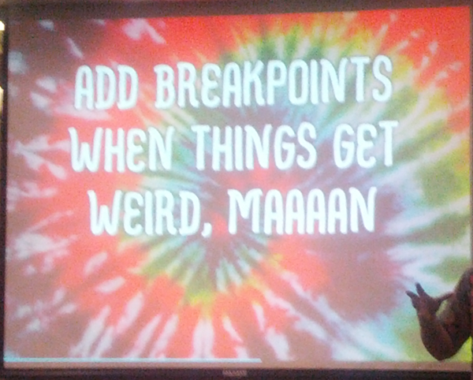

Your browser doesn't support the features required by impress.js, so you are presented with a simplified version of this presentation.
For the best experience please use the latest Chrome, Safari or Firefox browser.
2) Media Queries
fuente: W3C
Llamada normal:
<link rel="stylesheet"
type="text/css"
href="estilos.css"
media="screen">
Llamada con media query:
<link rel="stylesheet"
type="text/css"
href="estilos.css"
media="screen and (max-width: 480px)">
Llamada normal:
.noticia{float:none;}
Llamada con media query:
@media screen and (max-width:480px){
.noticia{float:none;}
}
@media
(-webkit-min-device-pixel-ratio: 2),
(min-resolution: 192dpi) {
estilos...
}
@media
only screen and (-webkit-min-device-pixel-ratio: 2),
only screen and ( min--moz-device-pixel-ratio: 2),
only screen and ( -o-min-device-pixel-ratio: 2/1),
only screen and ( min-device-pixel-ratio: 2),
only screen and ( min-resolution: 192dpi),
only screen and ( min-resolution: 2dppx) {
estilos...
}

<meta name="viewport" content="width=device-width, initial-scale=1.0" />
Use a spacebar or arrow keys to navigate